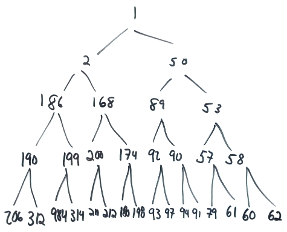

Today we'll look at different ways of creating a priority queue, an ADT used to implement those same algorithms.
- Readings: Text 14.3, 16.5
- Lecture quiz on Canvas
Lecture Video
Contents
1. Hand-written Notes
2. Preliminaries: Tree Terminology
3. Minheaps: Properties, Operations, and Runtimes
4. Percolation
5. Best-Case Runtime for Deletion
6. Extension: Priority Queues
7. Application: Heapsort
8. Representation
9. Heapify
10. Maxheaps
11. What's next?
12. Exercises
Hand-written Notes
Attachment: minheaps-written-notes.pdf
Attached above are the hand-written notes from today's class (with some extra detail and explanations).
I have included a summary of today's key points below, but the hand-written notes have more details and diagrams.
Preliminaries: Tree Terminology
Today's main topic was the minheap, which is used to implement priority queues. A minheap is a tree data structure, and so we started class today with some basic tree terminology:
- nodes and edges (see diagram in hand-written notes)
- parent-child relationships (see diagram in hand-written notes)
- root node (only one per tree)
- leaf nodes (nodes with no children)
- binary trees (every node has at most two children)
- left child, right child (in binary trees)
- complete binary tree (every level is completely filled up, except perhaps for the bottom level, and if the bottom level is not filled up, all nodes on that level must be completely flushed to the left with no gaps)
Minheaps: Properties, Operations, and Runtimes
Minheaps are binary trees with two additional properties: a structural property (they are complete), and an ordering property (every node must have a value less than or equal to the values in its child nodes). (The latter property guarantees that every node has a value less than or equal to all the nodes in its subtrees, too -- its grandchildren, its great-grandchildren, and so on.)
We discussed three basic operations minheaps support, along with their big-oh runtimes:
- enqueue(value)
- Also called: insert(), add()
- Description: Inserts value into the heap.
- Best-case runtime: O(1), where new value is too large to percolate up
- Worst-case runtime: O(log n), where new value percolates up to root of tree
- dequeue()
- Also called: delete(), deleteMin()
- Description: Removes and returns the min value from the heap. Deletion of arbitrary values is not supported. (See note below.)
- Best-case runtime: O(1) (see "Best-Case Runtime for Deletion" section below)
- Worst-case runtime: O(log n), where value that moves to root percolates down entire height of tree
- peek()
- Also called: findMin(), getMin()
- Description: Returns the min value in the heap without removing it.
- Best-case runtime: O(1) (just return the value at the root!)
- Worst-case runtime: O(1) (just return the value at the root!)
The worst-case runtimes above are based on the height of the minheap, which we derived in class: floor(log2n) (for n > 0).
Note that the minheap's delete function does not allow us to delete arbitrary values from the heap. It only allows for deletion of the min value, which is always at the root. Deleting an arbitrary element from a minheap would potentially take O(n) time, because we don't know if we need to go left or right from the root (or from every other node, for that matter) to find an arbitrary value in the heap. Removing a value other than the root could also potentially disrupt the structural property of the heap (its completeness) in a way that would be difficult to recover from.
Therefore, if we need to support deletion of arbitrary elements in some program we're writing, we should probably consider a different data structure than this one.
Percolation
We also saw two percolation operations:
- percolateUp()
- Purpose: Supports insertion operation.
- Loose description: Keep swapping up as long as the value being percolated up is less than its parent.
- Best-case runtime: O(1), where value is too large to percolate up.
- Worst-case runtime: O(log n), where value percolates up from leaf position to root node.
- percolateDown()
- Purpose: Supports deletion operation. Also used in heapify() (see below).
- Loose description: Keep swapping down with smallest child as long as the value being percolated down is greater than that smallest child.
- Best-case runtime: O(1), where value is too large to percolate down.
- Worst-case runtime: O(log n), where value percolates down from root node to leaf position.
Best-Case Runtime for Deletion
We saw in class that the best-case runtime for deletion is O(1). That happens when the element that we move up to the root position only has to percolate down one level before settling into place. That can happen even if your heap gets absolutely huge. Consider, for example, what would happen if we called dequeue() on the following heap. Do you see the best-case pattern that causes deletion to be O(1)?

Someone pointed out in class today that we would also get an O(1) runtime if all the values in our minheap were equal. :)
Extension: Priority Queues
A priority queue is a minheap where we bundle a priority together with some other piece of data. We arrange nodes in our priority queue based on those priority values, and the associated data comes along for the ride.
For example, we could use a priority queue to manage print requests sent to a shared printer. We might use the number of pages in each print job as its priority and bundle it up in a struct or class with the associated print job data. If several people are trying to print documents at once, smaller jobs would percolate up in the queue and be serviced first, while someone with a larger print job would be made to wait (instead of making everyone wait for someone who wants to print 500 pages).
Application: Heapsort
We also saw that minheaps can be used to implement heapsort, which is an O(n log n) sort. It works as follows:
- Insert n elements into a minheap. Runtime: O(n log n)
- Remove all n elements from minheap. Runtime: O(n log n)
In step 2, we would just place the values in an array or vector as they came out of the minheap, since they would come out in sorted order. The overall runtime here is O(n log n) -- pretty awesome!
Representation
Minheaps are commonly implemented using arrays or vectors. For details, see pg. 10 of today's hand-written notes.
Heapify
Toward the end of class, we saw an algorithm called heapify that allows us to transform an arbitrary array into a heap in place (i.e., without creating an auxiliary data structure). See pg. 11 of today's hand-written notes for details.
At first glance, the runtime for heapify seems like it ought to be O(n log n). It turns out the runtime is even better than that: O(n), which is an awesome surprise. I hope to talk about why the runtime is O(n) in an upcoming lecture.
Maxheaps
A maxheap has the same structural property as a minheap, but its ordering property requires that any given node must have a value greater than or equal to the values in its child nodes. See pg. 13 of today's hand-written notes for an example.
What's next?
On Monday, we have an applied ethics lecture where we will talk about ethical issues surrounding classification, sorting, and ranking algorithms. After that, we will turn our attention to a data structure that relies heavily on pointers and dynamic memory management: linked lists.
Exercises
1. Draw a minheap of height 4 that will incur worst-case runtime when inserting the value 99. Then draw a minheap of height 4 that will incur best-case runtime when inserting the value 99.
2. Draw a minheap of height 4 that will incur worst-case runtime when calling dequeue().
3. Draw the heap that is represented by the following array, and tell whether it is a minheap, maxheap, neither, or both:
| 58 | 39 | 22 | 20 | 38 | 21 | 7 | 7 |
| 0 | 1 | 2 | 3 | 4 | 5 | 6 | 7 |
4. Re-visit the formulas we saw in class for calculating the index of a node's parent, left child, and right child when using an array to represent a complete binary tree. If we're using an array, what is the formula for the index of the last non-leaf node in a heap, assuming it holds n nodes?
5. What is the exact height of a complete binary tree with n nodes? Recall that you will need to use either a floor or ceiling function to give a precise answer.
6. As always, the textbook and this week's section are chock full of great exercises and additional examples to help reinforce this material.